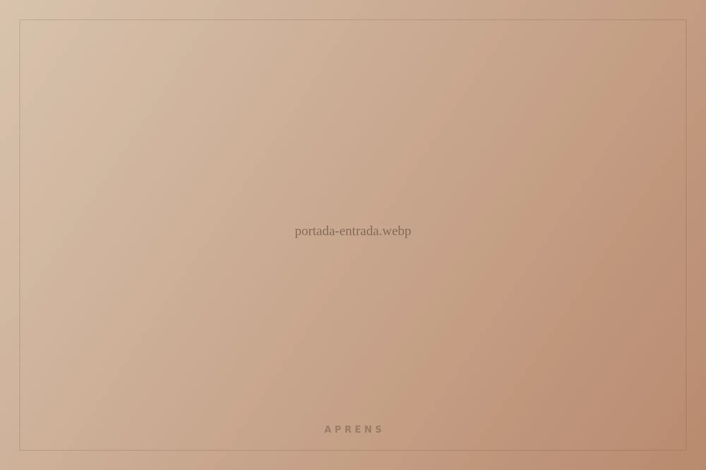
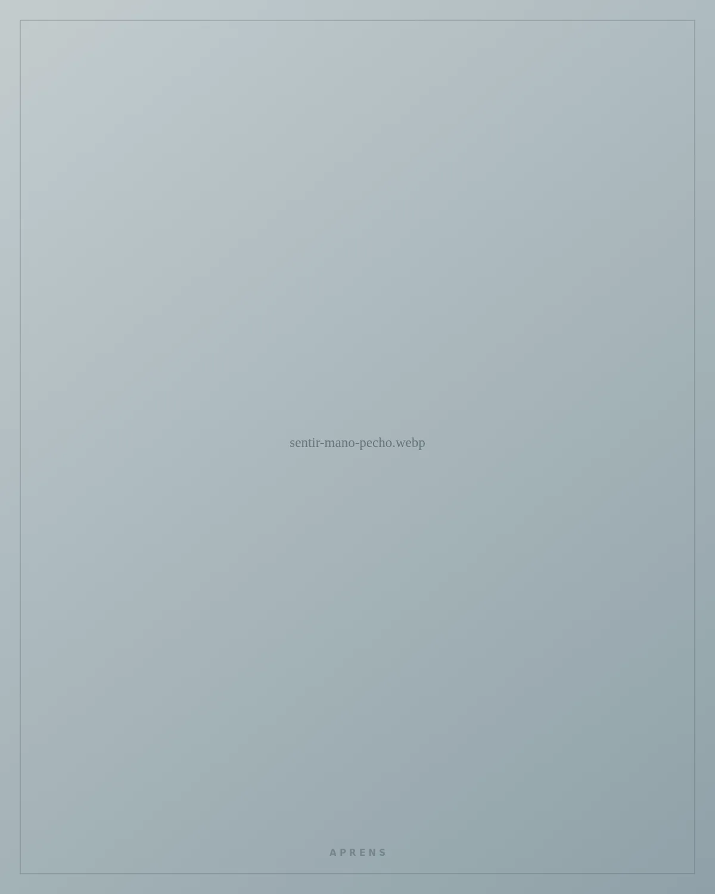
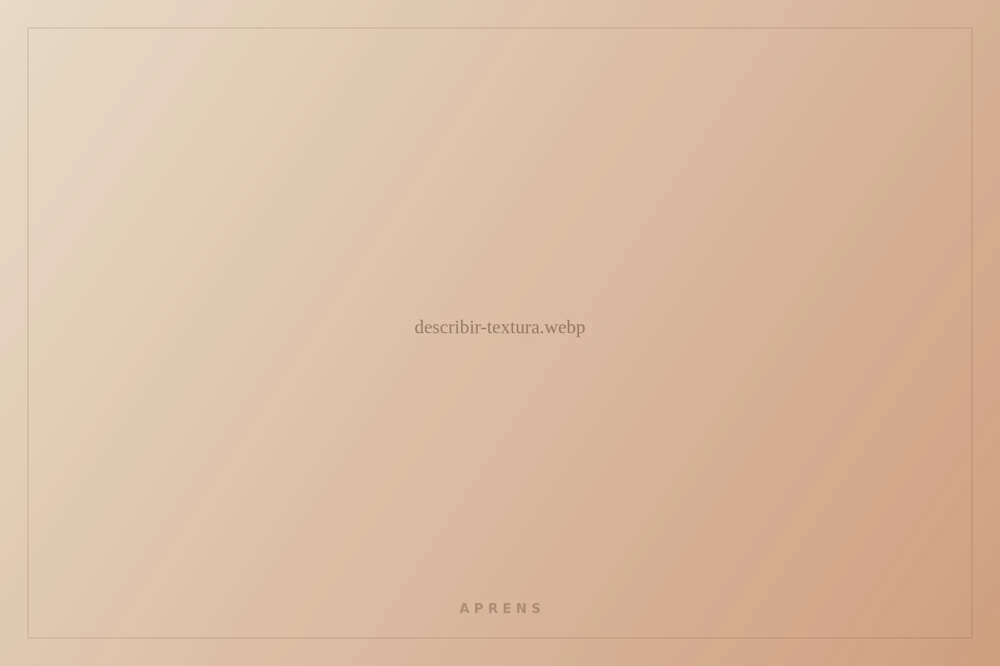
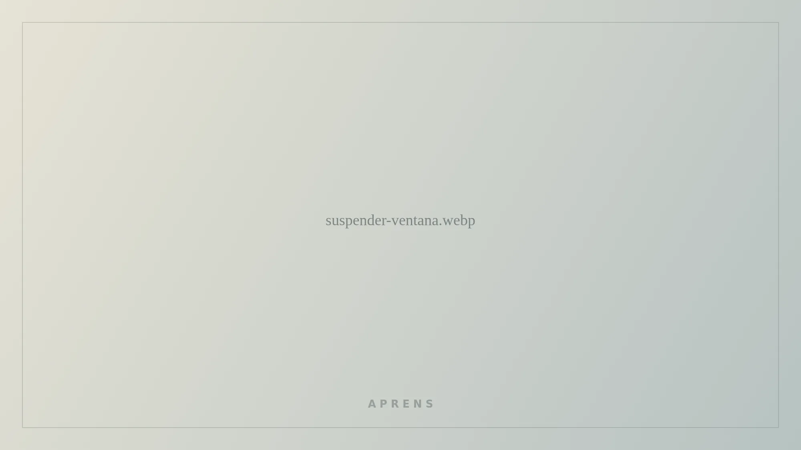

Honestidad emocional
Honestidad emocional
desde dentro
Primero acompaño. Después, si hace falta, comprendo.
No se trata de entender lo que sientes.
Se trata de estar con ello.
La honestidad emocional no empieza explicando. Empieza acompañando lo que aparece en el cuerpo, sin exigirle todavía que tenga sentido.

Siente dónde
Antes de nombrar nada, lleva una mano a donde lo notes. No busques la respiración perfecta ni una postura de meditación: solo deja la atención donde el cuerpo pesa, aprieta o se mueve.

Dos
Ponle textura,
no motivo
¿Cómo es por dentro? No por qué está: cómo es. Elige las palabras que se acerquen.

Tres
Suspende el porqué
Por un momento, deja de buscar la causa. No hace falta resolverlo para poder sostenerlo. Respira una vez, sin cambiar nada, y quédate mirando.
…solo estar, unos segundos más.
Compártelo,
sin justificarlo
No necesitas entenderlo ni explicarlo. Basta con nombrar la sensación y abrir la puerta a alguien a quien quieres.
Elige tu dirección
La sensación puede seguir ahí. Y aun así, tú decides el siguiente paso hacia lo que te importa. Pequeño, concreto, posible ahora.
Antes de cerrar
Vuelve a ti cuando quieras
Esto no sustituye la conversación con tu psicólogo/a: es un modo de acompañarte entre sesiones. Si quieres, guarda cómo ha ido para revisarlo juntos.